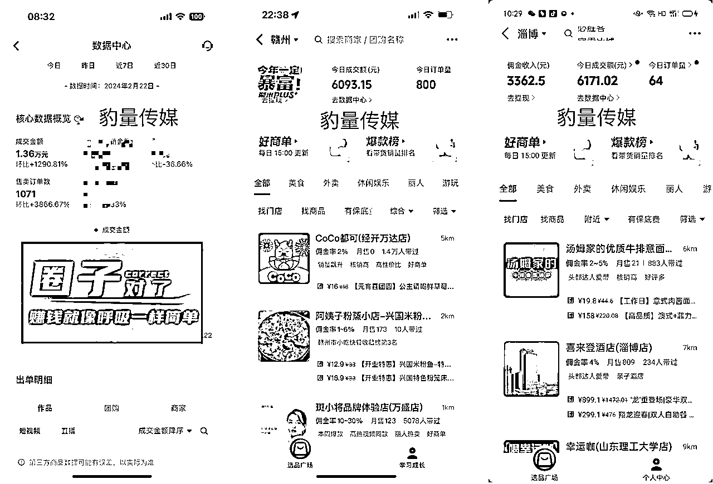
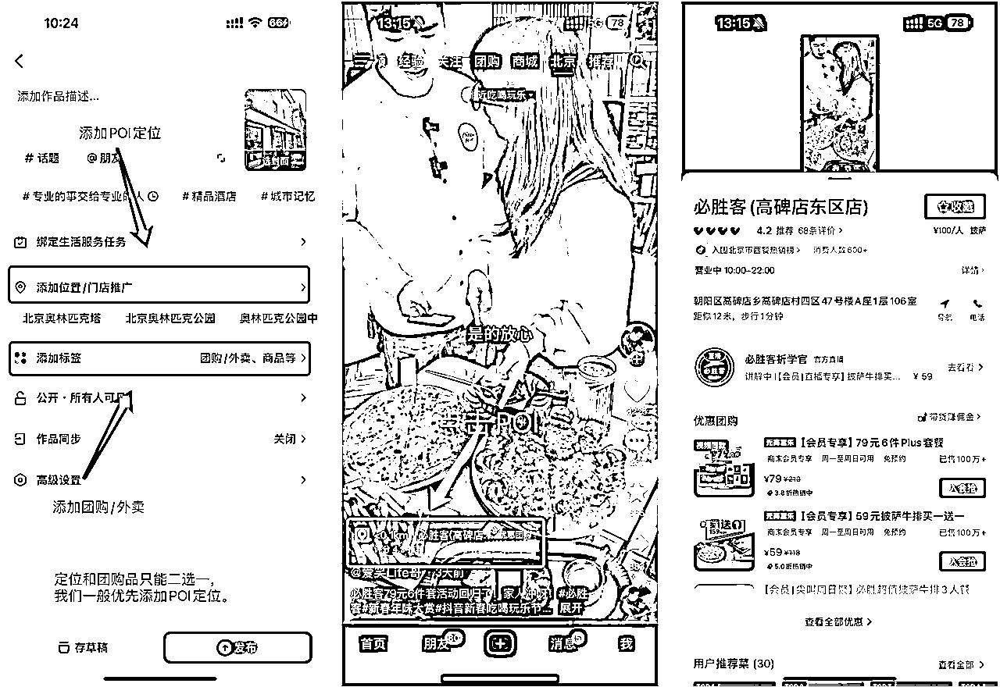
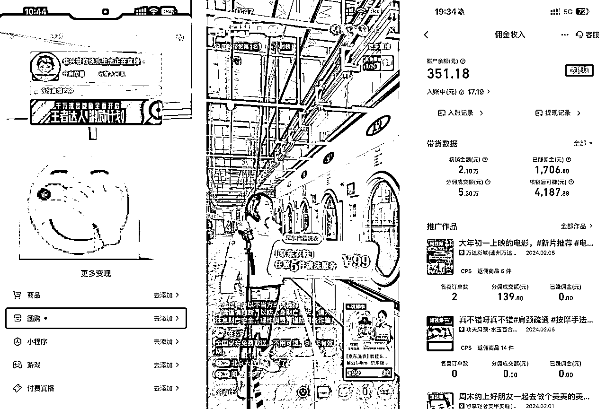
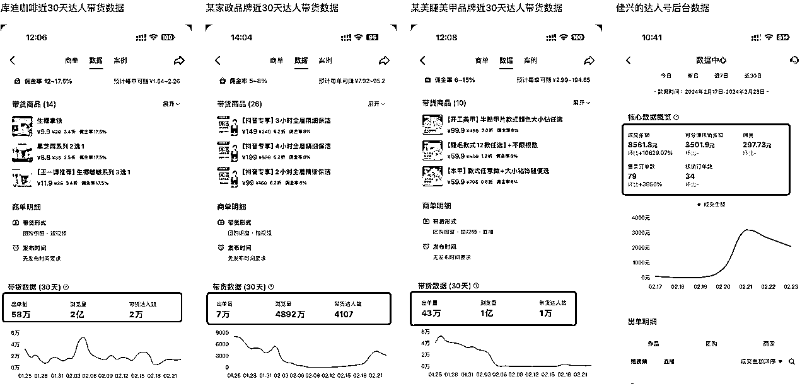
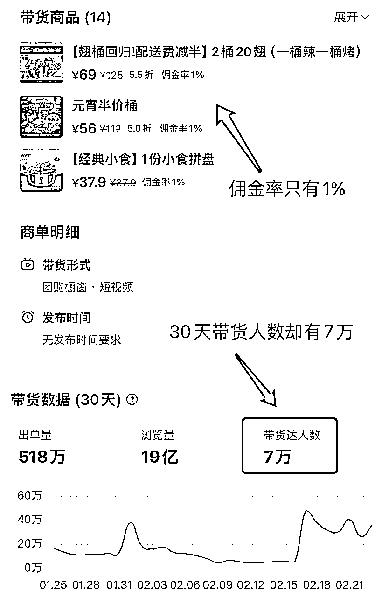
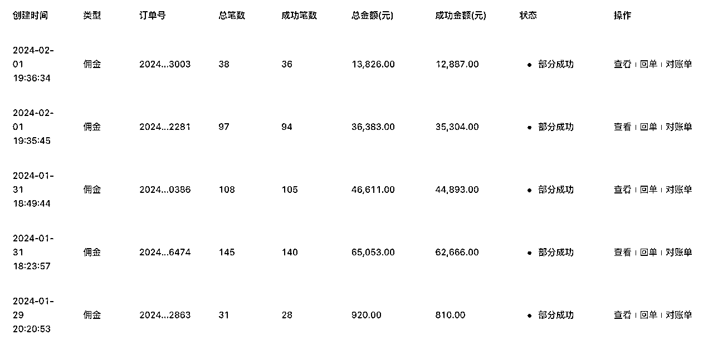
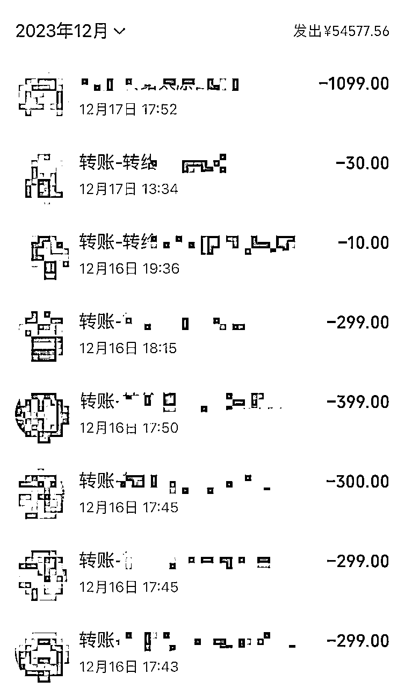
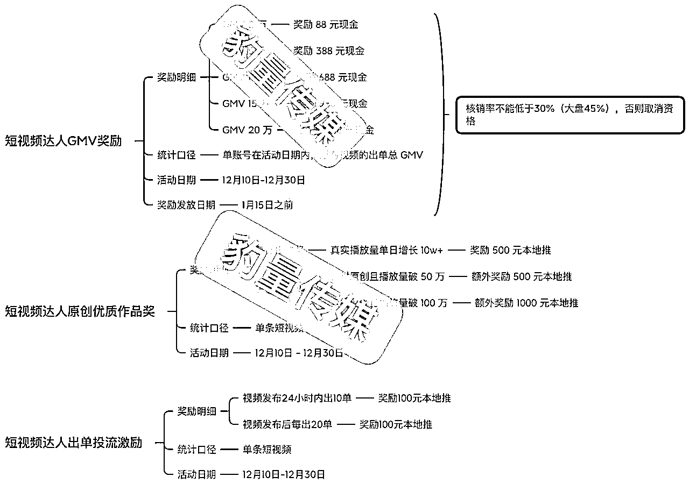
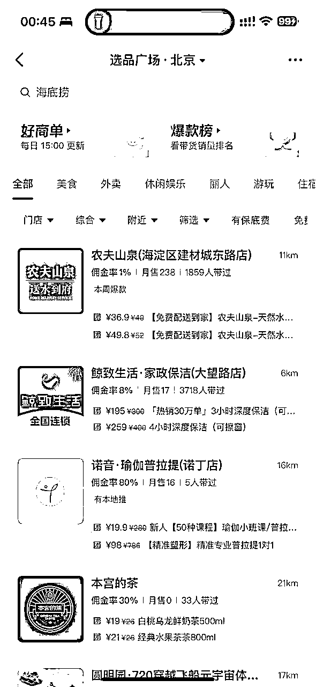
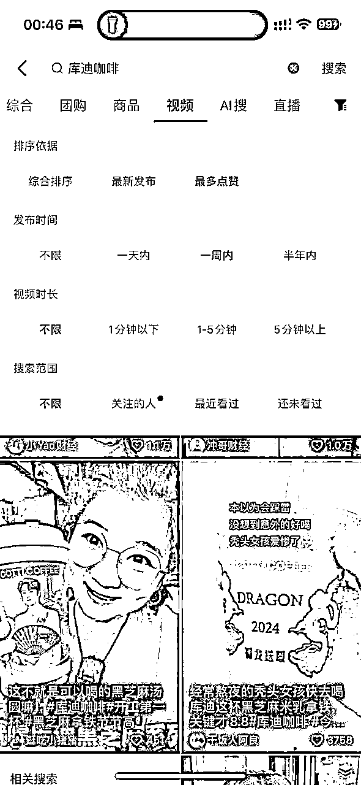

来源：https://s12is4u3s19.feishu.cn/docx/COVadjtFiothCwxkK3EcgDCpnjc
大家好，我是佳兴，本地生活综合行业 Top 操盘手，2023 年深度操盘了两个家政项目，并前后分别帮这两个品牌做到了家政头部。
同时担任多家实体品牌内容营销顾问，在美容丽人、餐饮等行业也都拿到过不错的结果。依靠自己快速的拿结果能力，在 2024 年初拿到百万融资，开启独立创业之路。
我 2023 年不只帮助服务的商家拿到了巨大结果，也带了不少普通人通过给商家做服务赚到不错的收益，比如带了几千个宝妈、学生、副业人群通过发团购带券短视频，每月多赚个几百、几千块零花钱。下面随便给大家贴几个我们达人的数据图：

有几个跟我做了比较久的达人团长，基本每个月能赚两万多，收入已经超过很多职场人了吧。下面是我助理给达人和团长们结算佣金的截图，大家可以感受一下。
其实我在 2023 年折腾过的项目不少，这是我正式 All in「内容流量」赛道的一年，从「视频号直播电商」到「小红书号店一体」，没赚到什么钱，但能踩的坑几乎都踩过了。
最后选中了「抖音本地生活」这个赛道，才拿到非常不错的结果。
那么今天，我就来从底层给大家分享下我的本地生活方法论，包括我对这个行业的思考，我的操盘案例以及决策思路。
无论你是为引流获客头疼的商家，还是想借着本地生活的赛道红利赚钱的学生、职场人，相信都能从这篇文章里获得价值。
首先，本地生活和电商都是面向普通老百姓的「消费行业」，通过提供某种有价值的「商品」或「服务」来解决「人」在日常生活中的各种消费需求来盈利。
从业务上讲，电商更偏向于「商品」属性，用户需求可以通过送货上门的商品来被满足；
而本地生活则更偏向于「服务」属性，用户需求无法脱离特定的「人」、「手艺」或「场域」而被满足。
比如洗发水，洗面奶，护肤品是商品，可以通过电商渠道来经营。
但是「美容美发」「解压按摩」就是服务，必须要通过本地实体来经营。
在内容营销上，本地生活也比电商有着更加丰富的创意玩法，比如「按摩店」可以通过短视频让人产生舒服、放松的身临其境的感官体验，从而让人忍不住下单去店里体验究竟。
人们对生活体验的追求是无止境的，这也是本地生活的魅力所在，有海量需求等着我们去发掘。
从竞争上讲，电商营销不需要受制于「地域」属性，所有商品可以卖给所有客户，也就意味着全国商家/达人都在同一个流量池中进行竞争，头部通吃，普通人毫无机会。即便你发现一个「蓝海赛道」，也会在第二天迅速被人跟上，然后内卷到谁都赚不到钱。
但是在本地生活领域，因为受制于「地域」和「距离」的影响，非常依赖线下资源的积累。即便是“有钱有势”的头部品牌，也很难快速占领所有城市的用户需求，正所谓「强龙难压地头蛇」。
反过来讲，在本地生活领域，一旦你通过独特的经营方式取得了先发优势，并在城市里站稳脚跟，那别人再想追赶就要付出加倍的努力。
对于普通人来讲，做一个「本地生活达人」更是比做「电商达人」要好拿结果得多，有大量中小城市都没什么像样的探店达人，北京达人也不会去探衡水的店，这就是普通人的机会所在。
做本地生活达人，你的竞争对手将不再是全网账号，而是当地账号，成功率显然要高出很多。
还记得我之前给大家分享的文章么 没看过的建议去看看。
这篇文章主要跟大家讲了两件事情：
如果你是个小实体店老板，并且所做的行业开始有云连锁品牌在扩张，别犹豫，选一家最好的加入进去，否则你绝对会被云连锁品牌替代：
如果你是个有多年积累，比较有实力的实体老板，别犹豫，抓紧时间做云连锁，用各种方式跑马圈地，抢占优质 POI 资产。
注：POI 是在线地图领域的专业术语，Point of Interest 的缩写，是指兴趣点。每个 POI 至少包含以下 4 项基本信息：名称（Name）、类别（Type）、经度（longitude）、纬度（latitude），它可以是一栋房子、一个商铺、一个景点或一个公交站等。
在抖音本地生活业务里，POI 可以理解为线下店铺在抖音地图上的「位置资产」。
抖音云连锁的价值依然被大家严重低估，未来各行各业都会走向连锁化，这是符合经济发展规律的。
连锁品牌产品研发成本低，供应链采购成本低，交付流程标准化，营销获客成本低，夫妻老婆店根本没有任何竞争优势。
再给大家分享个行业秘密：消失的门店之「虚拟 POI」。
不知道你们有没有跟着地图导航，走向“死路”的经历，POI 虽然是真实世界的线上还原，但只要是程序就会有 bug。
2023 年抖音里面突然就诞生了大量的连锁「家政品牌」，包括上门保洁、上门取送洗衣等等，而且很多品牌瞬间就开了几百家上千家店。
你就没纳闷过，为什么他们开店这么快？
还记得我前面说的那句话么：POI 不仅是线下店铺的线上化，还是撬动抖音同城流量的营销支点。
对于劳动者上门服务业，本质上是按摩师、美容师、保姆、保洁阿姨、收纳师、家修师傅等等「劳动者」和「客户需求」之间的匹配。
线下实体店的价值就聊胜于无了，POI 的作用就是为了辐射当地同城客户，最大化内容价值。因此对于上门服务业，有「POI」没「线下店」就成了一种高性价比操作，这个就不展开说了，毕竟属于违规操作。
关于商家和品牌端的玩法，咱们就先说到这，今天其实想重点跟大家介绍下「抖音团购达人」这个项目。
要说 2024 年最适合新媒体小白入手的项目，那一定是团购达人赛道，抖音、快手两个平台现在的团购内容红利正在继续，视频号和小红书也在布局中，市场前景巨大。
截止 2022 年底，美团有 720 万本地生活商家，到店业务 GMV 为 2200 亿。
而抖音本地生活已覆盖 370 个城市，合作门店超 200 万家，GMV 达到 770 亿。看起来，和美团的的差距还有很大。
2023 年抖音生活服务数据报告显示，平台总交易额增长 256%（算下来已经超过 2500 亿），门店共覆盖 370+ 城市的超过 450 万家门店，相比 2022 年，平台短视频交易额增长 83%，平台直播交易额增长 570%！
这也印证了我在 2023 年初的市场趋势判断。
我 2023 年上半年入行本地生活就开始做「达人运营」，平均每天都要花 10 个小时混迹在各种达人圈子里，从混剪达人，到实探达人，再到直播达人，从赚佣金到赚车马费，再到赚出单奖励。
可以说，目前在本地生活这个领域，没有人比我更懂抖音团购达人，也没有人比我更了解抖音团购达人的各种赚钱姿势。
在这个行业，如果你找到正确的姿势，赚钱如喝水一样简单，大钱不敢说，做做副业每个月几千块问题不大。
很多做过团购达人的，雷声大雨点小，最后都没有坚持下去，核心原因有两个：
废话不多说，咱们直接开始给大家讲项目！
抖音团购达人从内容形式和工作方式上分为两种方向，一种是「短视频卖券」，一种是「直播卖券」，这两个方向对达人能力的要求不同，工作内容也完全不一样，因此很少有达人能同时做好短视频和直播的。
短视频卖券，就是发布短视频的时候添加「POI」或者「团购链接」，这样用户刷到的视频就可以直接在视频左下角购买团购券，核销后短视频账号可以获得相应 cps 佣金。

直播卖券，就是开直播的时候添加「团购链接」，这样用户刷到你的直播间就可以直接在右下角小房子里购买团购券，核销后直播账号可以获得相应 cps 佣金。

我目前主要深耕在短视频领域，因此咱们今天也重点跟大家介绍短视频达人的赚钱方式。
「出单佣金」是大多数团购达人的赚钱方式，主要靠视频卖券出单赚佣金，团购带券的佣金比例一般在 5%-20% 不等，如果想要赚取更多的出单 cps 佣金，选品很重要，我们的选品需要遵循以下三个原则：
像是库迪咖啡就把这三项全占了，因此成为 2023 年的大爆品，几乎全网的团购达人都在卖库迪咖啡。
还有一些诸如「家政保洁」「美容按摩」「洗车汽修」的品牌通过抖音团购这个渠道大放异彩，核心原因也是满足「好出单、核销率高、佣金高」这三点。

极个别餐饮的佣金只有 1%，比如肯德基、必胜客、海底捞，但是也有很多人带，这又是什么原因呢？

带货力是团购达人主流评价标准，最低 L0，最高 L7，带货力越高，也代表了你账号的出单能力越强，也就更容易接到有推广费的「商单」。
一般账号带货力达到 3 级就可以开始接到 5-15 元每条的剪辑费，每提升一个等级账号的报价就能越高。6 级实探账号的探店车马费一般能到 200 元/条以上，每天拍两条短视频，就可以获得相当不错的收益。
商家推广费，也有叫车马费、剪辑费，是达人「老司机」的主流赚钱方式，除了我们上面提到的「账号等级和权重」，更需要一定的商务资源积累。
很多人做了团购带券达人，发现虽然出单不错，但是佣金太低赚不到钱，主要是没有接到「商家推广费」。佳兴现在做本地生活 MCN，负责多个品牌的商家的短视频推广业务，每个月有上百万的短视频推广预算给到达人，这也让跟着我的达人和团长们都赚到了钱。
下面是我们给部分达人的结算记录：


什么样的视频能赚到几十块一条，甚至几百块一条的推广佣金呢？
下面这条，是我们一个达人做的美甲美睫探店视频，根据账号等级的不同，这样一条视频的收益大概是 100-300 元，大家感受一下：
没有剧情、没有特效、没有热点，就这样一条朴实无华的广告宣传视频，很难做吗？
由于短视频团购达人的入行门槛非常低，市场上的达人鱼龙混杂，数据表现波动大，商家虽然有推广预算，但也希望把钱花在刀刃上，不想钱花出去了，单没出了（liao 三声）。
因此聪明的商家，就发明出了「后置奖励」，可以根据团购达人的业绩产出，给达人一些额外奖励。以此激励达人提高作品质量，绑定优质出单达人长期合作。
比如出单数/播放量达到一定标准，则商家奖励达人本地推投流，帮助高转化率作品高速增长。在 ROI 较高的基础上，商家和达人双赢。
比如根据达人的带货销售额，给达人额外现金奖励，或者提高定向佣金。
我们团队也会帮自己的达人们去申请各种品牌方的后置奖励，双方进一步建立信任，下图为佳兴 12 月份给达人申请的某家政品牌现金奖励，推广效果极佳，品牌方选择跟我们长期合作，我们旗下的达人也能拿到更多收益。

首先在开始带货之前， 我们需要先成为团购达人，也就是开通团购带货权限（已经开通的同学可以略过）。
抖音在 2023 年上半年有过短暂的 0 粉丝开通团购带货权限的窗口期，但现在平台要求 1000 粉丝才能开通团购带货。咱们星球有很多教大家怎么搞到 1000 粉丝的方法，我这里就不再赘述了。
Ps. 快手目前也在大力发展本地生活业务，0 粉可以开通团购达人，看到这里的朋友赶紧去开通，说不准哪天就又要门槛了，早就是优势！
下面是我给大家录好的一个开团带货权限的视频，大家可以看一遍。
这里推荐一个小程序「配音神器」，无广告很好用（微信扫描下方小程序码使用）
做过抖音的都知道，最难的就是起号，前期把账号数据养好，你的团购赚钱之路会很顺。反之，你将会走很多弯路，比如内容很好，但为什么就是没流量，比如流量不错，但为什么就是不出单......


做内容创业，切忌三天打鱼两天晒网，一定要坚持剪，坚持发，这一点做到了，你离赚钱就不远了。
虽然团购带券达人已经是我认为对新人最友好的项目，但所有项目也都有他的适合人群。
以下情况的人群，不建议你做：
如果你想好了，真的要做个团购达人，那么或许下面几个建议能让你少走一些弯路：
关于「本地生活团购达人」的分享就到这里，感谢阅读。如果对抖音本地生活团购达人玩法感兴趣的话，欢迎链接交流。
Ps. 本篇帖子点赞过 188，来给大家更新商家端干货玩法，赠人点赞，手留余香～
我是佳兴，本地生活实战派，豹量传媒创始人。
最懂实体商家的团购达人，也是最懂团购达人的商家操盘手。
微信号：jiaxing1801，欢迎链接沟通，备注圈友。